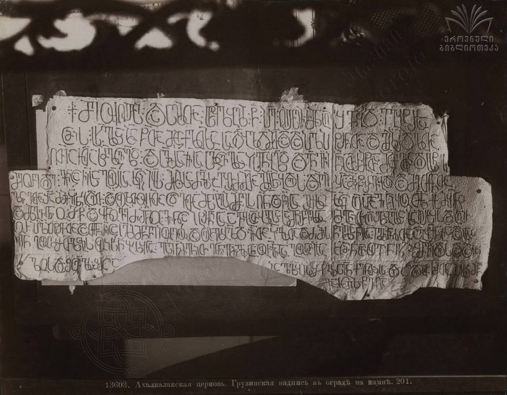
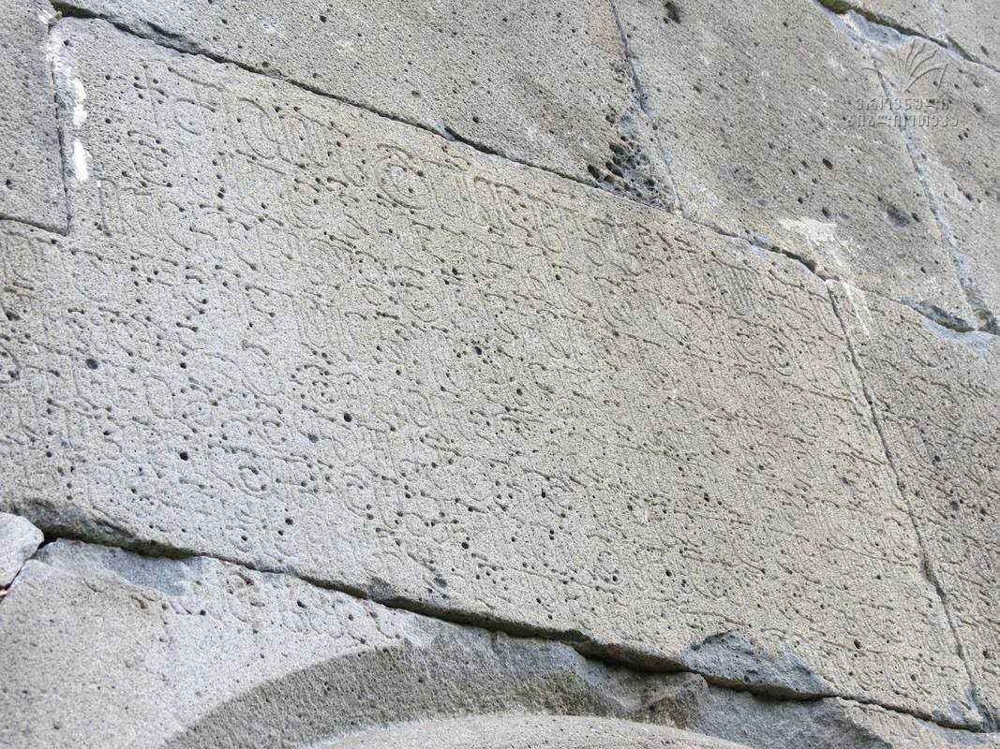

ახტალის თორმეტი მოციქულის ეკლესიის წარწერა
შინაარსი / Summary
მოსახსენებელი
ბიბლიოგრაფია Bibliography
კრიტიკული გამოცემა Interpretive Edition
჻†჻ მე ოჳღირსი჻ და ს(უ)ლითა჻ ს(ა)წყ(ა)ლ(ო)ბელი჻ წ(ინამძღუარი)჻ პ(ეტრ)ე჻ ღირს(ე)ვიქმნ აღშენებ(ა)დ჻ ეგ(ო)ჳტ(ე)რისა
ამის჻ ს(ა)ხ(ე)ლსა ზ(ედ)ა წ(მიდათ)ა მ(ო)ციქ(უ)ლთ(ა)სა სადი(დე)ბ(ე)ლ(ა)დ მ(ა)თდა და პ(ირვე)ლ პ(ა)ტრ(ო)ნთა და გ(ა)მზრდ(ე)ლთა
ღ(მრ)თი(ს)ა ჩ(უენ)თა჻ ს(ა)მლ(ო)ცვ(ე)ლ(ო)დ჻ და ს(უ)ლისა ჩ(ემ)ისა ს(ა)ლ(ო)ცვ(ე)ლსახს(ე)ნ(ე)ბ(ე)ლ(ა)დ და გ(ა)ნვ(ი)ჩინე ათ(ო)რმ(ე)ტთა მ(ო)ც(ი)ქ(უ)ლთა დღ(ე)ს(ა)სწ(აუ)ლის
მეორე დღე ვინაცა ჩ(ემი)სა გოჳ(ა)რ(ი)სა კ(ა)ცი იყ(ო)ს მისისა ძ(ა)ლ(ი)საებრ ძმ(ა)თა გ(ან)მ(იჴ)ს(ე)ნ(ე)ბდეს და იგი ჟამ(სა) მიწ(ი)რვ(ე)ბდ(ე)ს და მე თქ(უე)ნთა
5ლ(ო)ცვ(ა)თა შ(ინ)ა მ(ო)მიჴს(ე)ნ(ე)ბდეთ჻ და ოჳკ(უე)თოჳ ჩ(ემ)თა ც(ო)დვ(ა)თა მ(ი)ს(ა)გებელი მ(ო)მ(ა)გ(ო)ს ღ(მერთმა)ნ და ჩე(მის)ა გ(უა)რისა კ(ა)ცი აღარავინ იყოს თქ(უე)ნ ქ(რისტე)ს მ(ო)ყ(უა)რ(ე)ნო
და მზგ(ა)ვსნო჻ მ(ამანო) წ(ინამძღუარნო) და ყ(ოველ)ნოვე ძმ(ა)ნო ვინცა პ(ა)ტრ(ო)ნისა ავ(ა)გ ათ(ა)ბ(ა)გისა სამწირვ(ე)ლ(ო)სა ჩ(ე)მგნით აღშ(ე)ნ(ე)ბ(უ)ლსა ზ(ედ)ა ღირსყ(ო)ს აღირ -
სოთ პ(ირვე)ლ პ(ა)ტრ(ო)ნთა და თქ(უე)ნ ჩ(ემ)იცა ს(უ)ლი მ(ა)ნვე იოჳრვოს დაოჳკლ(ე)ბ(ე)ლ(ა)დ ჩ(ემი)თა ჴ(ე)ლითა და ძმისწ(უ)ლისა ჩ(ემ)ისა ილ(ა)რ(იო)ნისითა აგჳშ(ე)ნ(ე)ბია და არა -
ვინ გოჳჱმ(ა)რთლ(ე)ბის ოჳჴს(ე)ნებლ(ო)ბ(ა)სა჻ ესე ჩ(ე)მგნით გ(ა)ნჩ(ე)ნ(ი)ლი ანოჳ ჩ(უე)ნისა გოჳარისა კ(ა)ცმ(ა)ნ ანოჳ ვინ სხ(უა)ჲ შ(ე)მ(ო)ვიდეს და დააკ -
ლოს და შ(ე)ცვ(ა)ლ(ო)ს შ(ე)მცაიცვლ(ე)ბის შჯ(უ)ლის(ა)გ(ა) ქ(რისტეა)ნთ(ა)ჲსა და ც(ო)დვ(ა)თა ჩ(ე)მთა პ(ა)ს(უ)ხი მ(ა)ნ
10გასცეს წ(ინაშ)ე ღ(მრთის)ა
დიპლომატიური გამოცემა Diplomatic Edition
჻†჻ ႫႤ ႭჃႶႨႰႱႨ჻ ႣႠ ႱႪႨႧႠ჻ ႱႼႷႪႡႤႪႨ჻ Ⴜ჻ ႮႤ჻ ႶႨႰႱႥႨႵႫႬ ႠႶႸႤႬႤႡႣ჻ ႤႢჃႲႰႨႱႠ
ႠႫႨႱ჻ ႱႾႪႱႠ ႦႠ ႼႠ ႫႺႨႵႪႧႱႠ ႱႠႣႨႡႪႣ ႫႧႣႠ ႣႠ ႮႪ ႮႲႰႬႧႠ ႣႠ ႢႫႦႰႣႪႧႠ
ႶႧႨႠ ႹႧႠ჻ ႱႫႪႺႥႪႣ჻ ႣႠ ႱႪႨႱႠ ႹႨႱႠ ႱႪႺႥႪႱႠႾႱႬႡႪႣ ႣႠ ႢႬႥႹႨႬႤ ႠႧႰႫႲႧႠ ႫႺႵႪႧႠ ႣႶႱႱႼႪႨႱ
ႫႤႭႰႤ ႣႶႤ ႥႨႬႠႺႠ ႹႱႠ ႢႭჃႰႱႠ ႩႺႨ ႨႷႱ ႫႨႱႨႱႠ ႻႪႱႠႤႡႰ ႻႫႧႠ ႢႫႱႬႡႣႤႱ ႣႠ ႨႢႨ ႯႠႫ ႫႨႼႰႥႡႣႱ ႣႠ ႫႤ ႧႵႬႧႠ
5ႪႺႥႧႠ ႸႠ ႫႫႨჄႱႬႡႣႤႧ჻ ႣႠ ႭჃႩႧႭჃ ႹႧႠ ႺႣႥႧႠ ႫႱႢႤႡႤႪႨ ႫႫႢႱ ႶႬ ႣႠ ႹႤႠ ႢႰႨႱႠ ႩႺႨ ႠႶႠႰႠႥႨႬ ႨႷႭႱ ႧႵႬ ႵႱ ႫႷႰႬႭ
ႣႠ ႫႦႢႥႱႬႭ჻ Ⴋ Ⴜ ႣႠ ႷႬႭႥႤ ႻႫႬႭ ႥႨႬႺႠ ႮႲႰႬႨႱႠ ႠႥႢ ႠႧႡႢႨႱႠ ႱႠႫႼႨႰႥႪႱႠ ႹႫႢႬႨႧ ႠႶႸႬႡႪႱႠ ႦႠ ႶႨႰႱႷႱ ႠႶႨႰ
ႱႭႧ ႮႪ ႮႲႰႬႧႠ ႣႠ ႧႵႬ ႹႨႺႠ ႱႪႨ ႫႬႥႤ ႨႭჃႰႥႭႱ ႣႠႭჃႩႪႡႪႣ ႹႧႠ ჄႪႨႧႠ ႣႠ ႻႫႨႱႼႪႨႱႠ ႹႨႱႠ ႨႪႰႬႨႱႨႧႠ ႠႢჃႸႬႡႨႠ ႣႠ ႠႰႠ
ႥႨႬ ႢႭჃჁႫႰႧႪႡႨႱ ႭჃჄႱႬႤႡႪႡႱႠ჻ ႤႱႤ ႹႫႢႬႨႧ ႢႬႹႬႪႨ ႠႬႭჃ ႹႬႨႱႠ ႢႭჃႠႰႨႱႠ ႩႺႫႬ ႠႬႭჃ ႥႨႬ ႱႾჂ ႸႫႥႨႣႤႱ ႣႠ ႣႠႠႩ
ႪႭႱ ႣႠ ႸႺႥႪႱ ႸႫႺႠႨႺႥႪႡႨႱ ႸႿႪႨႱႢ ႵႬႧჂႱႠ ႣႠ ႺႣႥႧႠ ႹႫႧႠ ႮႱႾႨ ႫႬ
10ႢႠႱႺႤႱ ႼႤ ႶႠ

ახტალის წარწერა

ახტალის წარწერა
{'ka': '† მე, უღირსი და სულითა საწყალობელი წინამძღვარი პეტრე, ღირსი გავხდი ამ ეგვტერის აშენებისა წმიდათა მოციქულთა სახელზე,\n სადიდებელად მათდა და პირველ პატრონთა და გამზრდელთა, ღმრთისა ჩუენთა სამლოცველოდ. ჩემი სულის სალოცველ-საჴსენებელად\n განვაჩინე ათორმეტთა მოციქულთა დღესასწაულის მეორე დღე. ვინც ჩემი გვარის კაცი იყოს, მისი ძალისაებრ ძმათა გამიჴსენებდეს\n და ჟამს მიწირვებდეს და მე თქუენს ლოცვებში მომიჴსენებდეთ. ხოლო თუ ჩემთა ცოდვათა მისაგებელი მომაგო ღმერთმა\n და ჩემი გვარის კაცი აღარავინ იყოს, თქუენ, ქრისტესმოყუარენო და მსგავსნო მამანო, წინამძღუარნო და ყოველნო ძმანო, ვინც ჩემ მიერ აშენებულ\n პატრონ ავაგ ათაბაგის სამწირველოს ზედა ღირს-იყოთ და აღირსოთ პირველ პატრონთა, ჩემი სულიც იურვეთ დაუკლებელად.\n ჩემი და ჩემი ძმისწულის, ილარიონის, ჴელით აგჳშენებია და არავინ გუჱმართლების უჴსენებლობასა. ესე ჩემ მიერ განჩენილი გინდ ჩუენისა გვარისა კაცმან,\n გინდ ვინმე სხვა მოვიდეს და დააკლოს და შეცვალოს, შე-მცა-იცვლების შჯულისაგან ქრისტეანეთაჲსა და ცოდვათა ჩემთა პასუხი მან აგოს უფლის წინაშე.'}
{'default': 'პეტრე წინამძღვრის ეს წარწერა ზაზა ალექსიძისათვის გახდა გასაღები ლუვრის წარწერის გასაშიფრად. მკვლევარი მიიჩნევს, რომ\n ეს ორი წარწერა, ლუვრისა და ახტალის, მოთავსებული იყო ერთმანეთის გვერდით, ჯერ პეტრეს წარწერა, ბალავრის თავზე, შემდეგ კი ილარიონის,\n მის გასწვრივ. ამ მოსაზრებას ამყარებს წარწერების პალეოგრაფიული ერთგვაროვნებაც.'}
<div type="edition" xml:lang="ka" ana="mtavruli" xml:space="preserve">
<ab>
<lb n="1"/><w lemma="ქრისტე"><expan><abbr>ქ</abbr><ex>რისტ</ex><abbr>ე</abbr></expan></w>
<w lemma="განსუენება"><expan><abbr>გა</abbr><ex>ნ</ex><abbr>ო</abbr><ex>ჳ</ex><abbr>ს</abbr><ex>უ</ex><abbr>ენე</abbr></expan></w>
<w lemma="სულ">სოჳ<lb n="2" break="no"/>ლსა</w>
<name nymRef="ვაჩა">ვაჩაჲს<lb n="3" break="no"/>ასა</name>
<name nymRef="გურა"><expan><abbr>გო</abbr><ex>ჳ</ex><abbr>რაჲ<lb n="4" break="no"/>სასა</abbr></expan></name>
<name nymRef="მირა"><expan><abbr>მ</abbr><ex>ი</ex><abbr>რა</abbr><ex>ჲ</ex><abbr>ს</abbr><ex>ა</ex><abbr>ს</abbr><ex>ა</ex></expan></name>
</ab>
</div>